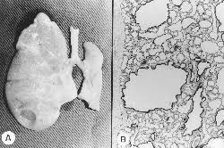

A Malformação Adenomatoide Cística Congênita (MACC) é uma anomalia rara do desenvolvimento pulmonar que ocorre durante a gestação, caracterizada pela formação de cistos no tecido pulmonar devido ao crescimento anormal dos bronquíolos terminais. Esta condição pode variar em tamanho e gravidade, afetando a respiração do bebê e, em casos mais graves, levando a complicações como hidropisia fetal e desconforto respiratório neonatal.
A (MACC) pode ser classificada em tipo I, II e III com base nos temanho e na quantidade dos cistos presentes. O tipo I consiste em um ou mais cistos grandes com diâmetro superior a 2cm, o tipo II consiste em cistos menores que 2cm de diâmetro e o tipo III é uma massa solida sem cistos macroscopicamente visiveis.
O diagnóstico é feito por meio de exames e ultrassonografias, a principal forma de descoberta é a ecografia morfologica, o diagnóstico se da por volta da 18ª e 22ª semana de gestação.
O tratamento vai depender da gravidade da situação como quantidade, tamanho e sintomas presentes, importante lembrar qje exisgemsim situações onde a criaça portadora da doença é assintomática, o que complica mais as coisas. Nos casos mais leves, o acompanhamento e observação já bastam, mas em alguns casos já é nescessário a cirurgia e corticóides, e em casos mais raros e sérios pode ser recomendado o uso de dreno toraxico. Os sintomas geralmente são desconforto respiratório.
A cirurgia feita é a lobectomia pulmonar, que é a remoção do lobo pulmonar afetado, é o tratamento cirúrgico mais comum. Pode ser realizada por cirurgia aberta ou videotoracoscopia.
O tratamento dessa malformação quanto antes feito melhor, pois evita que sejam desenvolvidas sequelas ou problemas maiore. Se não tratada, pode levar a diversas sequelas, tanto no período neonatal quanto na infância e vida adulta. As principais consequências incluem insuficiência respiratória, infecções pulmonares recorrentes, pneumotórax e, em casos mais graves, desenvolvimento de tumores.